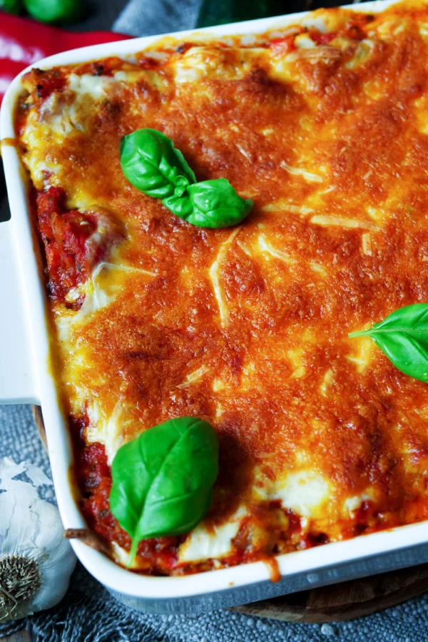

Gemüselasagne

Beispielbild für fertiges Gemüselasagne Gericht
Diese Gemüselasagne beinhaltet viel Gemüse, wie Paprika, Zucchini und Möhren. Mit diesem Gericht wird es ein leichtes sein sich fleischlos zu ernähren.
Zutaten
- 1 Zwiebel
- 2 Knoblauchzehen
- 600 g Gemüse (Paprika, Zucchini, Möhren)
- 1 EL Olivenöl
- 800 g geschälte Tomaten
- 2 EL Tomatenmark
- 2 EL gehackte Petersilie
- Salz und Pfeffer
- 1 EL Paprikapulver
- 12 Lasagneplatten
- 150 g geriebener Käse
Schritte
- Zwiebel, Knoblauch klein hacken. Paprika, Zucchini und Möhre grob zerkleinern, dann im Mixer klein pürieren. Olivenöl in einer Pfanne erhitzen und Zwiebeln und Knoblauch andünsten. Gemüse und Tomatenmark zugeben und kurz rösten. Geschälte Tomaten unterheben und alles mit Petersilie, Salz, Pfeffer und Paprikapulver würzen. 5 Minuten bei mittlerer Hitze köcheln lassen.
- Butter in einem Topf zerlassen, danach das Mehl zügig mit einem Schneebesen einrühren. Nach und nach die Milch zugeben und unter ständigem Rühren aufkochen. Unter Rühren köcheln lassen, bis eine cremige Sauce entsteht. Mit Salz und Pfeffer würzen.
- Backofen auf 200 Grad Ober- und Unterhitze vorheizen.
- Die Lasagne wie folgt schichten: Gemüsesauce, dann immer abwechselnd Lasagneplatten, Gemüsesauce und Béchamelsauce. Mit der Sauce enden. Alles mit geriebenem Käse bedecken und 30 Minuten backen.